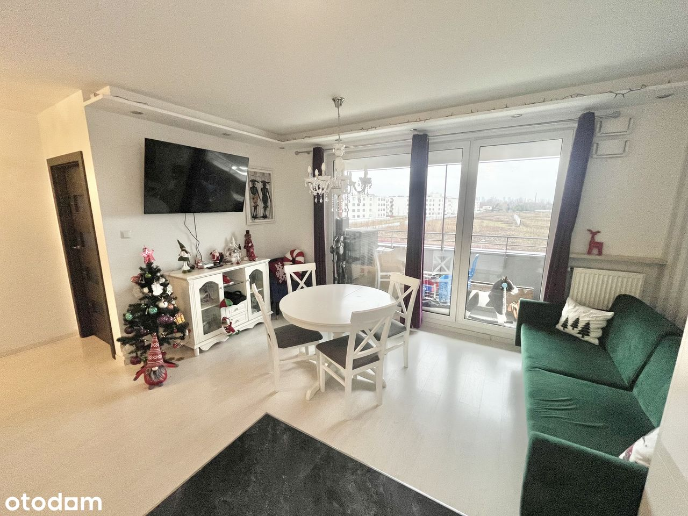
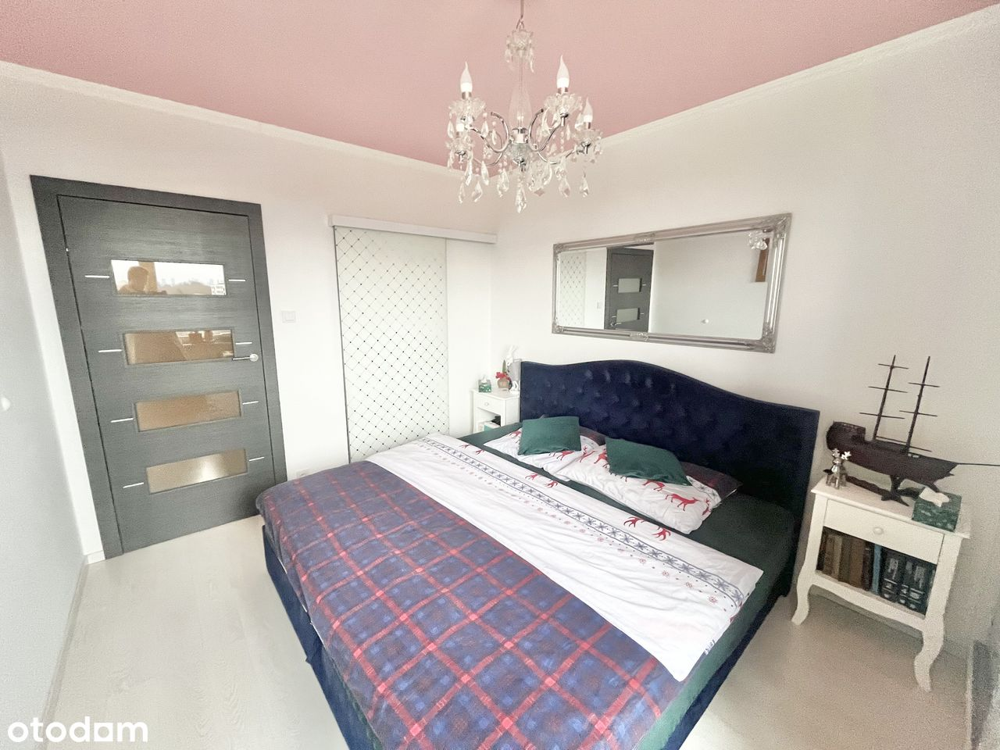
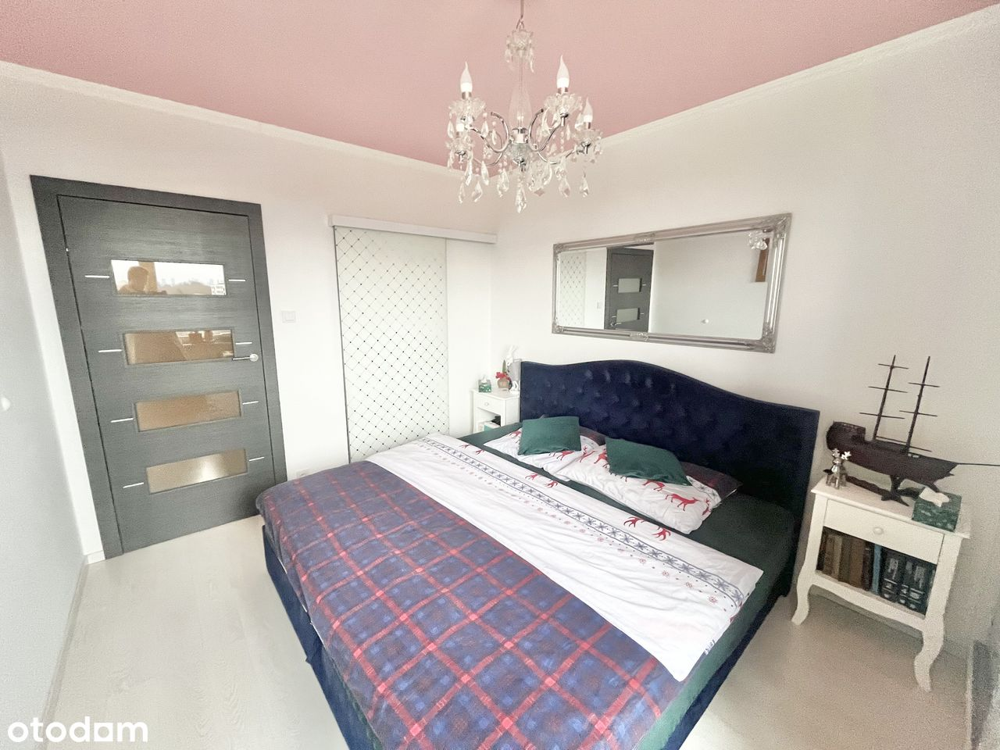
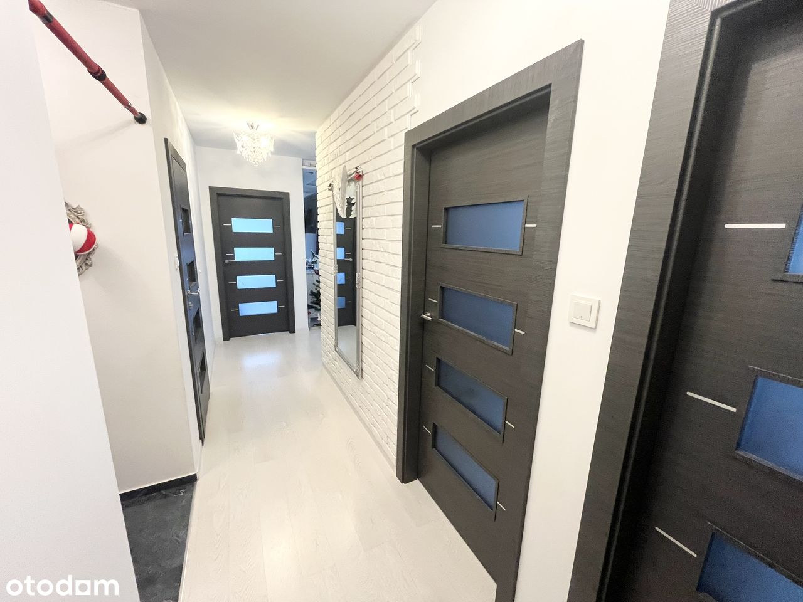
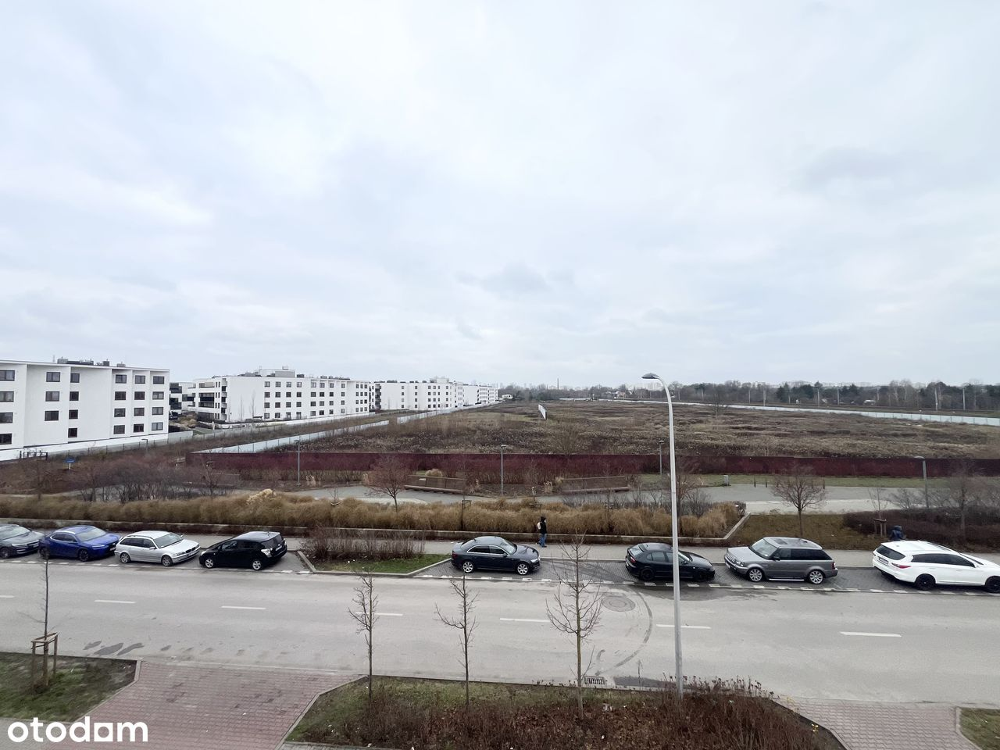
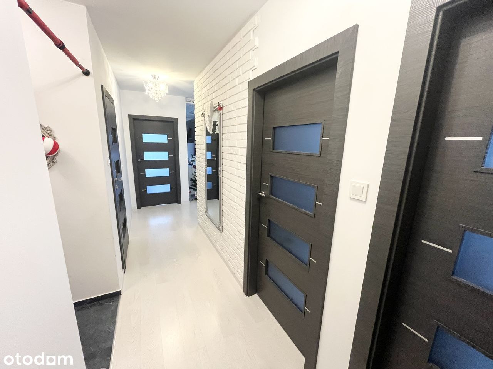
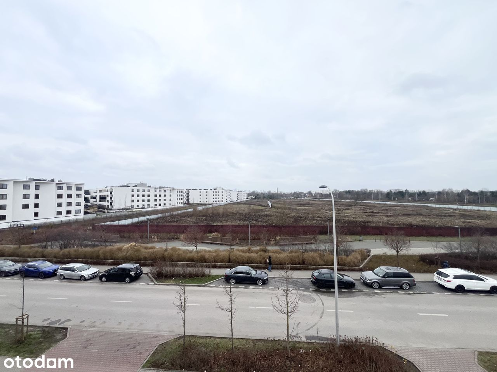
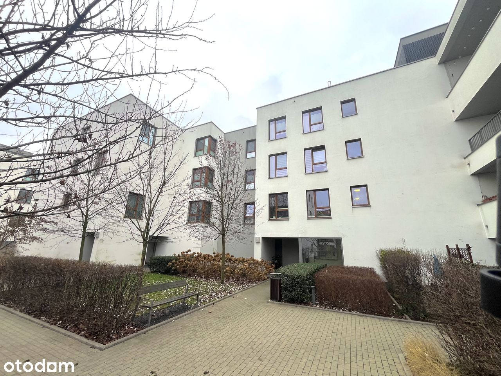
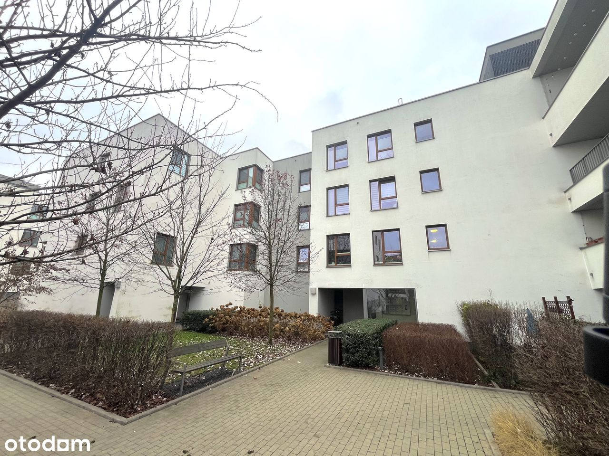

Co: Mieszkanie czteropokojowe
Rodzaj Własności: Pełna własność
Gdzie: ul. Wierna, Targówek
Czynsz ADM: ok.1000zł
Metraż: 79,59m2
Miejsce parkingowe: dodatkowo płatne
Cena: 1 329 000zł
Opis Mieszkania:
Przedmiotem oferty jest czteropokojowe mieszkanie znajdujące się na drugim piętrze nowoczesnego budynku z 2018 roku.
Idealna propozycja dla rodziny!
Mieszkanie jest gotowe do wprowadzenia i nie wymaga nakładów finansowych, zostało wykończone w pełni pod siebie, dlatego każdy centymetr jest dokładnie przemyślany.
Dobrze doświetlone, ale nie nagrzewające się dzięki podwójnej ekspozycji okien na Zachód oraz Północ. Mieszkanie narożne.
Dużo przestrzeni do przechowywania zapewniają dwie garderoby.
W skład mieszkania wchodzą:
- Salon z aneksem kuchennym ok.20,5m2
- Sypiania ok.13m2
- Sypialnia ok.12m2
- Sypialnia ok.10m2
- Łazienka ok.5m2
- Łazienka ok.3m2
- Garderoba ok.2m2
- Garderoba
Do mieszkania przynależy duża loggia o powierzchni prawie 6m2. Dodatkowo do zakupy przewidziane jest miejsce parkingowe – garażowe w cenie 45 000 zł brutto.
Opis Okolicy:
Budynek postawiono w ramach inwestycji Osiedle Wilno, na terenie której można znaleźć między innymi: piekarnie, przedszkola, żłobki, przychodnie, sklepy spożywcze czy restauracje. Dosłownie miasto w mieście!
Dla osób lubiących bliskość natury obok osiedla znajduj się Las na Utracie.
Opis Komunikacji Miejskiej:
W ramach inwestycji osiedla działa stacja kolejowa Warszawa Zacisze – Wilno, którą dostaniemy się dworzec Wileński w dosłownie kilka minut.
W pobliżu nieruchomości znajdują się kilka przystanków autobusowych.

 



 
 
